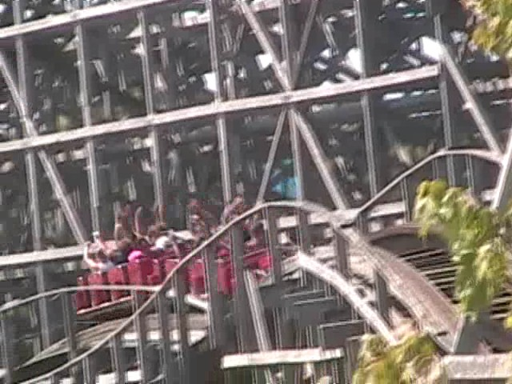

| |
Wolverine Wildcat Review
We're here at Michigan's Adventure and todays ride we'll be reviewing is Wolverine Wildcat. Once you get in the cars and pull down the lap bars and buckle the seatbelt, you're on your way. You roll around a turn and then head straight into a tunnel. This actually comes as a suprise, so you don't even get a chance to scream "TAKE THE TUNNEL!!!!!!" And yes, a ride can suprise you before the pre lift, and this is by far one of the weaker ones. After rolling around in the dark, we see the light. However, we're not dead. We're just heading for the lifthill. Once you climb the lift and reach the top, you head into the first drop (As if you had no idea that lifthills lead to first drops. But hey, I originally thought they lead you to the parking lot). Anyways, down the first drop we go. It's nothing special, but it's nothing horrible either. Then you rise up a hill and head into a turnaround. We lose a lot of speed here, but hey. At least you get a really nice view of the SLC. Then you drop back down. You then see these really small hills, and just as you guessed, too small and dull to provide any airtime whatsoever. After dealing with that, we climb back into another turnaround that doesn't really provide you with any laterals of excitement. Only now, we don't have that cool SLC view, so it's even lamer. You then dip back down and then you start to head into a double up. But it's barely even noticeable because it's pretty dull. But then, you get a double down to follow up. While it does provide you with a small pop of floater air, that sucks for a double down. But then again, this isn't really a speedy ride. Then you dip up and go into yet another turnaround. Then you go through another set of those teeny tiny hills before heading through a long turn into the station. Overall, this ride sucks. While I do admit that it's not terrible or anything, it's just nothing special. While it's the only ride other than Shivering Timbers that's not a clone here, it really doesn't matter when your ride is as dull as cardboard. I'd only recommend it for credit whoring.
5/10
Location: Michigan's Adventure
Opened: 1988
Built by: Dinn Coorperation
Last Ridden: August 9, 2008
Wolverine Wildcat Photos


|